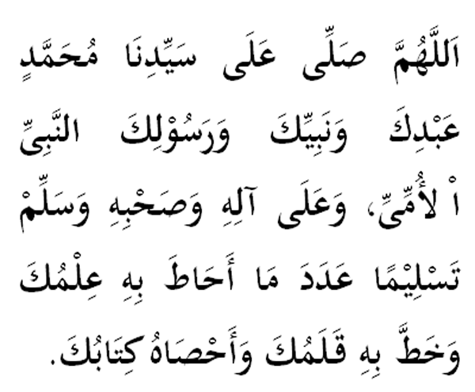

|

Terjemahan Ya Allah, restuilah dan berkatkanlah junjungan kami Muhammad, sebagai hamba, Nabi dan Rasul-Mu yang Ummi. Berkatilah keluarga dan sahabat Baginda. Sejahterakanlah Baginda selama-lamanya. Kami pohon sebanyak bilangan apa saja yang di ketahui oleh-Mu atau sebanyak perkara yang ditulis oleh kalam-Mu dan sebanyak yang dirangkum oleh kitab-Mu. |